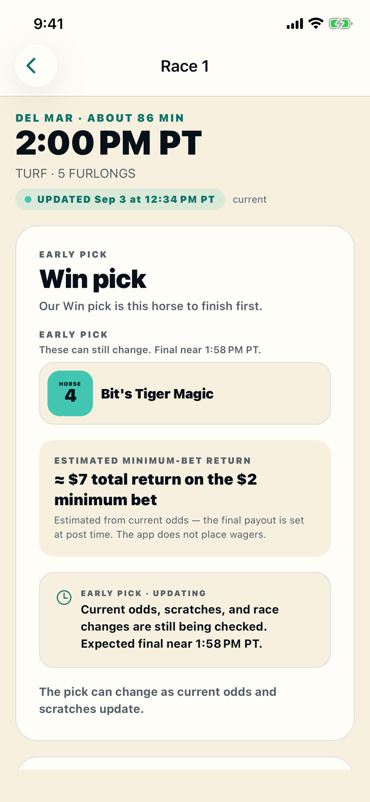
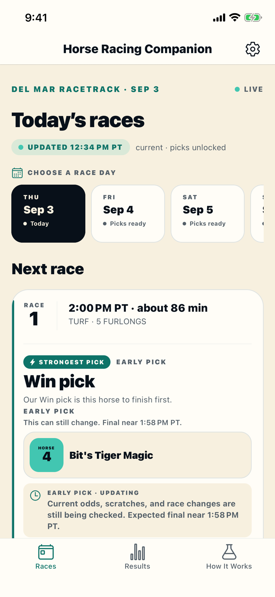
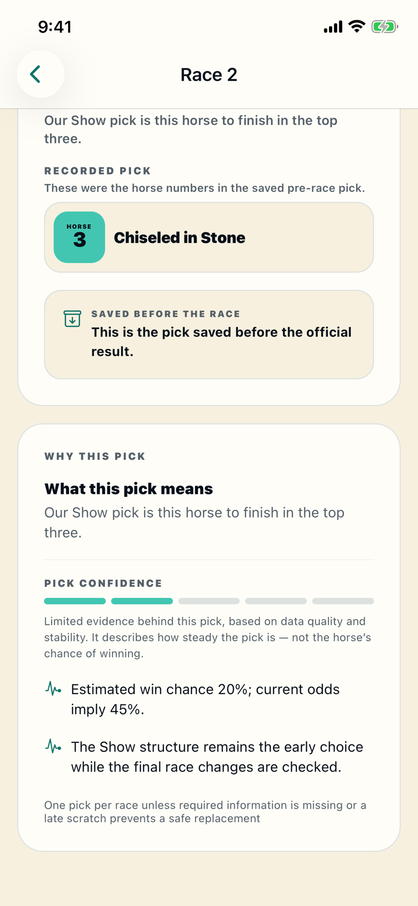
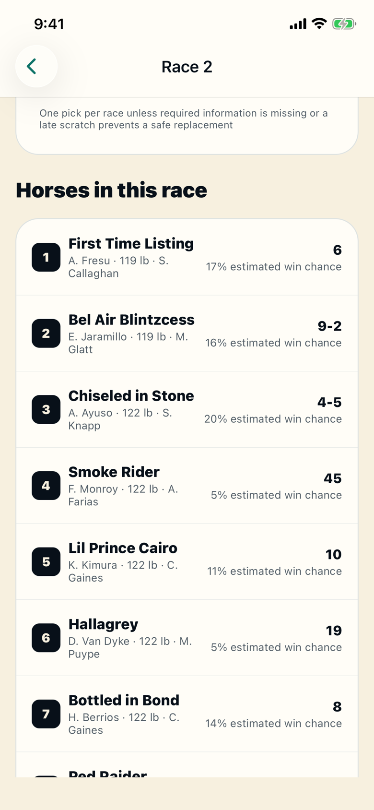
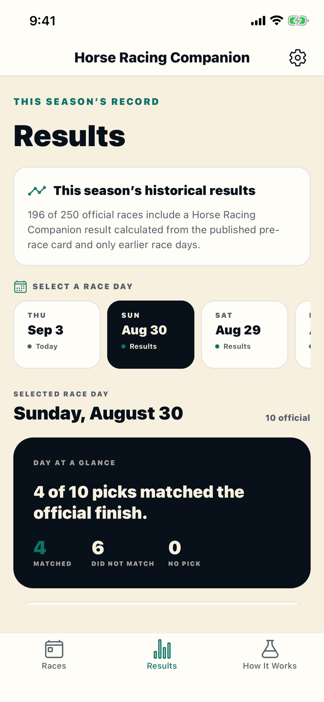
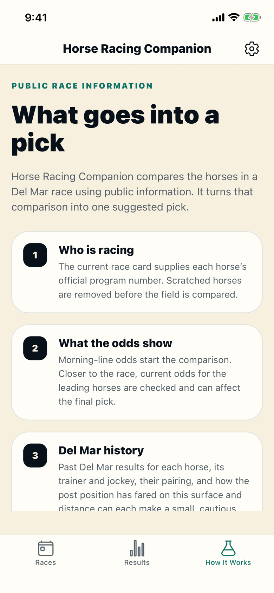

DEL MAR RACE DAYS · IPHONE · 18+
One pick per Del Mar race, with the reasons.
An independent iPhone app. For each race: one pick, every horse’s estimated win chance, a confidence level, and why. Picks are saved before post and shown beside the official result.

RACES TAB
The day’s card, race by race.
The Races tab lists every race on the Del Mar card with its post time, surface, and distance. The next race to run is at the top. Tap a date to open another race day.
When there is no racing
The screen says No racing today and shows the next race day with its gate time and first post.
When live picks open
Live picks start about two hours before first post. Until then the screen says Live Picks Open Later and gives the time.

RACE SCREEN
One pick per race, with the reasons.
Open a race and the pick is at the top: Win, Show, or a three-horse Trifecta box, with the horse numbers and names. Below it, the confidence meter and one or two sentences on why the app chose those horses.
Confidence meter
Five segments, labeled Low, Medium, or High. It measures how steady the pick is. It is not the horse’s chance of winning.
Every horse in the race
Program number, jockey, weight, trainer, current odds or morning line, and the app’s estimated win chance. Scratched horses are crossed out.


RESULTS TAB
Every pick kept beside the official finish.
About two minutes before post, the pick is saved and cannot change. After the race, the Results tab shows that saved pick next to the official first, second, and third finishers, and marks it Matched or Did Not Match.
Day at a glance
Each race day has a summary: how many picks matched, how many did not, and how many races had no pick.
Free to browse
Every past race day is open without a pass, including the picks that were wrong.

HOW IT WORKS TAB
How the app makes a pick.
The app uses only public race information and runs the same four steps for every race. The How It Works tab in the app describes them the same way.
1. Remove scratches
The current race card gives each horse’s program number. Scratched horses are taken out before anything is compared.
2. Start from the odds
Morning-line odds set the starting order. Closer to the race, current odds are checked and can move the pick.
3. Add Del Mar history
Past Del Mar results for each horse, its trainer, its jockey, that trainer-jockey pairing, and the post position on this surface and distance each adjust the estimate. A short history counts for less.
4. Keep checking until post
Odds, scratches, and post time are rechecked until about two minutes before the race. Then the pick is final and saved.

EARLY · FINAL · NO PICK
Three states for every pick.
An early pick is shown from the published card and can change as current odds and scratches come in. The final pick is saved about two minutes before post and stays on the record. A close race still gets a pick, marked Low confidence. No pick is shown only when there is too little Del Mar history for the horses, current odds could not be confirmed before the cutoff, or a late scratch left no safe replacement. No pick can guarantee a winner or a profit.
THE RECORD SO FAR
Saved before post, checked against the result
Six tracked cards, August 20 through August 29, 2026: 16 of 38 final pre-race picks matched their published result type, a live pick-match rate of 42.1%.
Every pick was saved before the official finish was known. No pick in 15 of 53 settled races. A match means the horses finished the way the pick said.
All six cards used public-card v0.4 with ticket-policy v0.4. This is a small sample. It does not establish profitability or a betting edge.
WHY IT EXISTS
Built by someone who could not figure out what to bet
Del Mar was a great day out with one frustrating part: the betting window. I could not work out which bet to place, or why one horse deserved it over another. Everyone around me had a system. Watch the paddock. Take the gray. Bet your birthday. Fun, but not reasons.
I wanted the other kind of reason. Public odds, past Del Mar results, trainer and jockey records, and post position, weighed the same way for every race. Nothing like that fit in my pocket, so I built it.
One pick per race with the reasons. No pick when the information is not there. Every final pick kept beside the official result. It will not always be right, and it shows you when it was not.
PRICE
Three racing days free, then one season pass
Race cards, odds, results, and past picks are free. No account.
Picks on a live race day use one of three free days. Tap Use a Free Day and confirm. One day unlocks the whole card.
After that, one season pass covers the rest of the current Del Mar season. One App Store payment, with the price and end date shown first. It does not renew. Restore Purchases is in Settings.
The pass only unlocks picks. It is not a deposit, credit, or way to pay for a bet.
FAQ
Common questions
Can the app place a bet?
No. It has no bet slip, stake control, wagering account, wallet, credits, or connection to a betting operator, and it never places or sends a wager. Any bet is your decision and happens outside the app.
What kinds of picks does it make?
Win (finishes first), Show (finishes in the top three), or a three-horse Trifecta box (the three horses fill the top three in any order). The pick card says which.
What does the season pass buy?
Race-day picks for the Del Mar season and end date shown before purchase. One App Store payment. It does not renew and is not a deposit, credit, or way to pay for a bet.
Is pick confidence my chance of winning?
No. Confidence is how steady the pick is. Each horse’s estimated win chance is shown separately on the race screen. Neither guarantees an outcome.
What information goes into a pick?
Public morning-line and current odds, and past Del Mar results for each horse, its trainer, its jockey, that pairing, and post position on this surface and distance.
When do live picks begin?
About two hours before the day’s first race. Before then the Races screen shows Live Picks Open Later and the opening time. If fresh data stops after that, it shows Live Updates Delayed and keeps checking.
How accurate are the tracked live picks?
Across six tracked cards from August 20 through August 29, 2026, 16 of 38 final pre-race picks matched their published result type, a live pick-match rate of 42.1%. The app made no pick in 15 of 53 settled races. Every pick was saved before the official finish was known. All six cards used public-card v0.4 with ticket-policy v0.4. This small sample does not establish profitability or a betting edge.
Can I try the app before buying a pass?
Yes. The first three racing days include every pick on the card. Race cards, odds, results, past picks, and How It Works are free without a pass.
Do I need an account?
No. A random installation ID, shown in Settings, tracks free days and the pass.
Is this an official Del Mar app?
No. Horse Racing Companion is independent and is not affiliated with, endorsed by, or sponsored by Del Mar Thoroughbred Club.
RACE RESPONSIBLY
Only wager what you can afford to lose
For adults of legal wagering age, where wagering is lawful. Read the 18+ and responsible-use guidance. If gambling is causing concern, the National Council on Problem Gambling offers confidential help.
AVAILABILITY
On the App Store now.
Three racing days free · No wagering · 18+